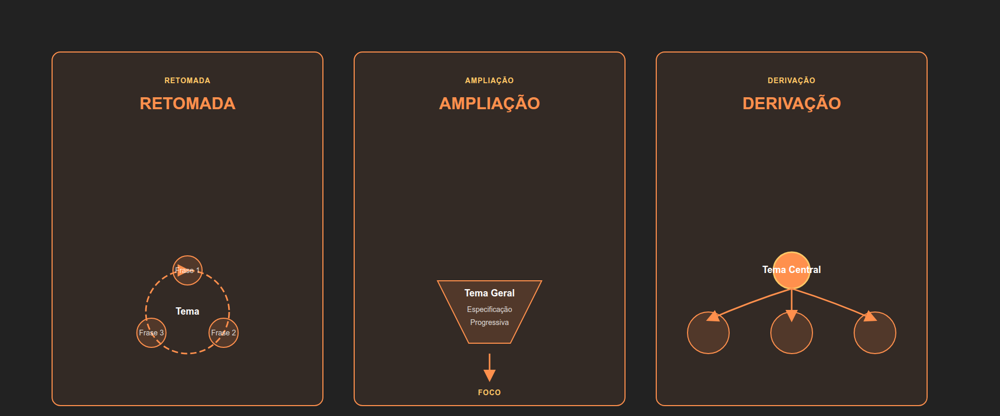
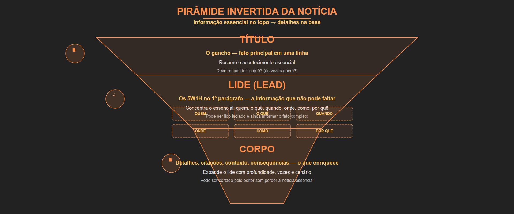

Concurso C-223 SEDUC-PA · Língua Portuguesa
Organização estrutural — o atalho que a banca não quer que você conheça: macro, micro e progressão temática.
Macro, micro e progressão — a tríade que resolve 80% das questões
4 cláusulas obrigatórias — se faltar uma, o texto não entrega o prometido
Sobre o que é? Ex: educação básica e qualidade
Qual o conflito? Ex: acesso universal vs. qualidade
Qual a posição? Ex: formação docente é fundamental
Para que serve? Informar, analisar, defender uma posição
Exemplo: "A educação básica enfrenta, atualmente, o desafio de conciliar o acesso universal com a garantia de qualidade." — Tema + problema + tese em uma frase.
4 motores que movem o texto — pare de ler passivamente, comece a caçar
A parte mais extensa do texto. Cada etapa sustenta a tese apresentada na introdução.
4 degraus — suba todos ou a argumentação desmorona no final
Retoma a ideia central e apresenta síntese, reafirmação da tese, proposta ou projeção final.
3 organelas — localize o núcleo (tópico frasal) e o resto se explica
Exemplo: "A leitura literária contribui para a formação crítica dos estudantes. Ao entrar em contato com diferentes mundos ficcionais, o aluno amplia sua visão de mundo." — Tópico frasal + desenvolvimento + fechamento.
3 rotas possíveis — identifique qual o autor escolheu e a leitura flui
O tema é mantido e retomado com novas informações a cada frase.
"A escola enfrenta dificuldades. Essas dificuldades afetam professores. Tais problemas repercutem nos alunos."
O tema inicial é ampliado para aspectos mais específicos ou mais gerais.
"Educação básica precisa ser repensada. Em especial, o currículo do ensino médio..."
De um tema central derivam-se subtemas específicos.
"Formação docente envolve dimensões. Técnica, política e ética."

Aplique as 3 lentes no próximo texto que cair na sua prova: macro, micro e progressão.
Depois de dominar, as questões de "qual a função?" viram ponto certeiro.
4 placas que a banca usa para esconder a resposta — aprenda a ler
Indicam o tema geral do texto. Leia-os antes de mergulhar no corpo.
Dividem o texto em partes temáticas — mapa de seções para localizar informação.
Organizam informações em tópicos isolados e sequenciais.
Negrito e itálico chamam atenção para conceitos e termos técnicos-chave.
Em textos acadêmicos: 1. Introdução · 2. Fundamentação teórica · 3. Metodologia · 4. Resultados — subtítulos viram guias de navegação.
4 tipos de conexão — a banca pergunta "qual a relação?" e você acerta
Mesmo raciocínio segue na próxima etapa.
"Escola repensa tecnologia. → Formação para uso pedagógico."
Ponto de vista contrário ou limitação apresentada.
"Celular engaja. → Mas dispersa e superficializa."
Um parágrafo explica o outro.
"Falta planejamento. → Alunos não acompanham."
Ideia geral ilustrada por casos concretos.
"Estratégias de leitura. → Clubes, rodas, projetos."
No texto dissertativo-argumentativo, classifique a função
Tema + tese (geralmente parágrafo 1)
Razões, dados e exemplos (coração do desenvolvimento)
Objeção + refutação ("contra" que fortalece)
Ilustra uma ideia já apresentada
Síntese + fechamento (último parágrafo)
Classifique a função e a questão "qual a função?" vira ponto certo
3 camadas — o essencial está no topo, o detalhe fica na base
O gancho — resume o fato principal em uma linha. "Escola estadual implanta projeto de leitura."
Primeiro parágrafo com o essencial: O quê, Quem, Quando, Onde, Como, Por quê.
Detalhes, citações, contexto e consequências. Pode ser cortado sem perder a notícia essencial.

4 blocos obrigatórios — pule um e o procedimento dá errado
Nomeia a atividade claramente. Ex: "Como organizar um plano de estudo para concursos".
Liste edital, disciplinas, carga horária antes de começar.
Sequência lógica — um por linha, verbo no infinitivo. Distribua os conteúdos ao longo da semana.
Cuidados, riscos e dicas. "Evite sobrecarregar a agenda; consistência é mais importante que intensidade."
3 roteiros possíveis — o autor escolhe um, a banca testa se você percebeu
De cima para baixo, de fora para dentro, perto para longe.
"Nas paredes prateleiras. No centro, mesas. Junto à janela, um sofá."
Cronológica: antes, durante, depois.
"No início, a sala estava vazia. Ao meio-dia, cheia de alunos."
Do geral para o particular, do principal para o acessório.
"O espaço é amplo. Os detalhes compõem a atmosfera de leitura."
A estrutura que prende do início ao fim
Personagens, tempo, espaço
O conflito surge
Ações diante do conflito
Ponto de máxima tensão
Resolução (ou não) do conflito
Exemplo: "A escola enfrentava evasão (situação inicial). Piorou após as enchentes (complicação). A direção articulou busca ativa (desenvolvimento). Após meses, matrículas recuperadas (desfecho)." — O clímax pode ser implícito.
Texto bem estruturado passa em todos; bagunçado cai em pelo menos 1
Todas as partes tratam do mesmo assunto central.
As ideias avançam de modo coerente, sem saltos.
As informações não se anulam internamente.
O prometido na introdução é desenvolvido e fechado na conclusão.
Exemplo de incoerência: Introdução promete "analisar desafios da formação docente", desenvolvimento fala de infraestrutura e conclusão pede "investir em transporte escolar". A banca rejeita na hora.
Aplicação direta na prova — cada passo elimina alternativas erradas
Autoavaliação: no final, releia o trecho antes de marcar a resposta.
Exemplo comentado — veja o método de 7 passos em ação
"A educação integral representa uma proposta de reorganização do tempo e do espaço escolares. Para que essa proposta se concretize, é necessário ampliar a carga horária e repensar as atividades. Assim, a educação integral não se resume a 'mais horas na escola', mas a uma concepção ampla de formação."
| Parágrafo | Conteúdo-chave | Função |
|---|---|---|
| 1º | Educação integral = reorganização de tempo e espaço + formação humana | Apresentação do tema e tese |
| 2º | Ampliar carga horária + repensar atividades (oficinas, esportes, apoio) | Argumentação / Exemplificação |
| 3º | "Não é mais horas, é concepção ampla" — retoma e sintetiza | Conclusão (retomada + síntese) |
Questão típica: "O terceiro parágrafo tem a função de..." → Resposta: retomar e concluir a argumentação.
Você tem o mapa, as lentes e o método. Agora é treinar até virar automático.
Módulo 02 · Organização Estrutural dos Textos